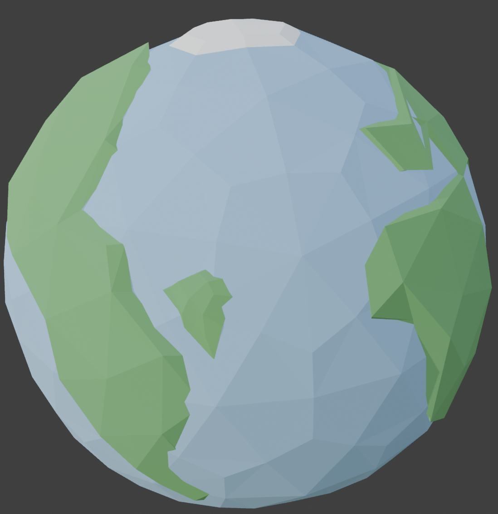
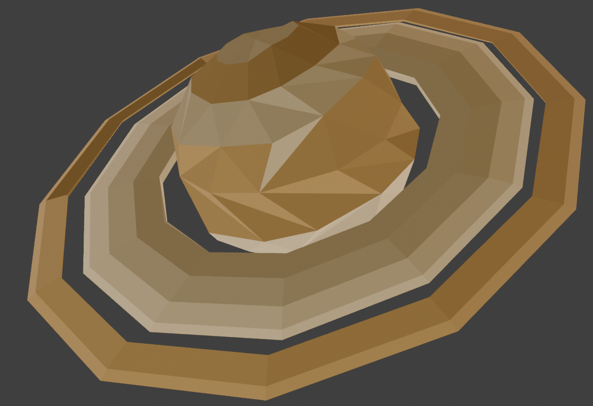
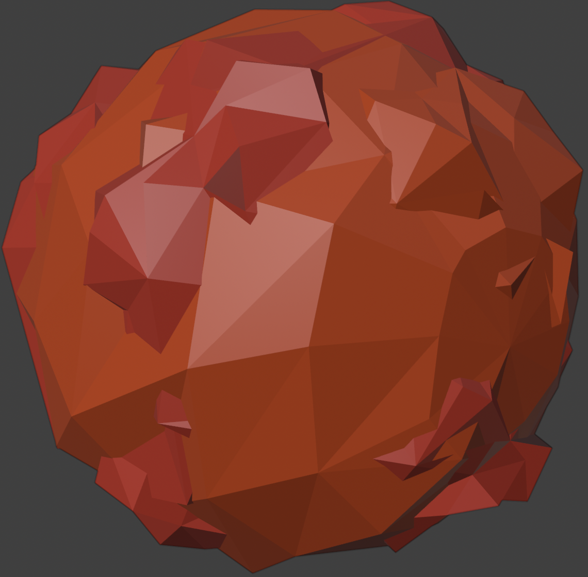
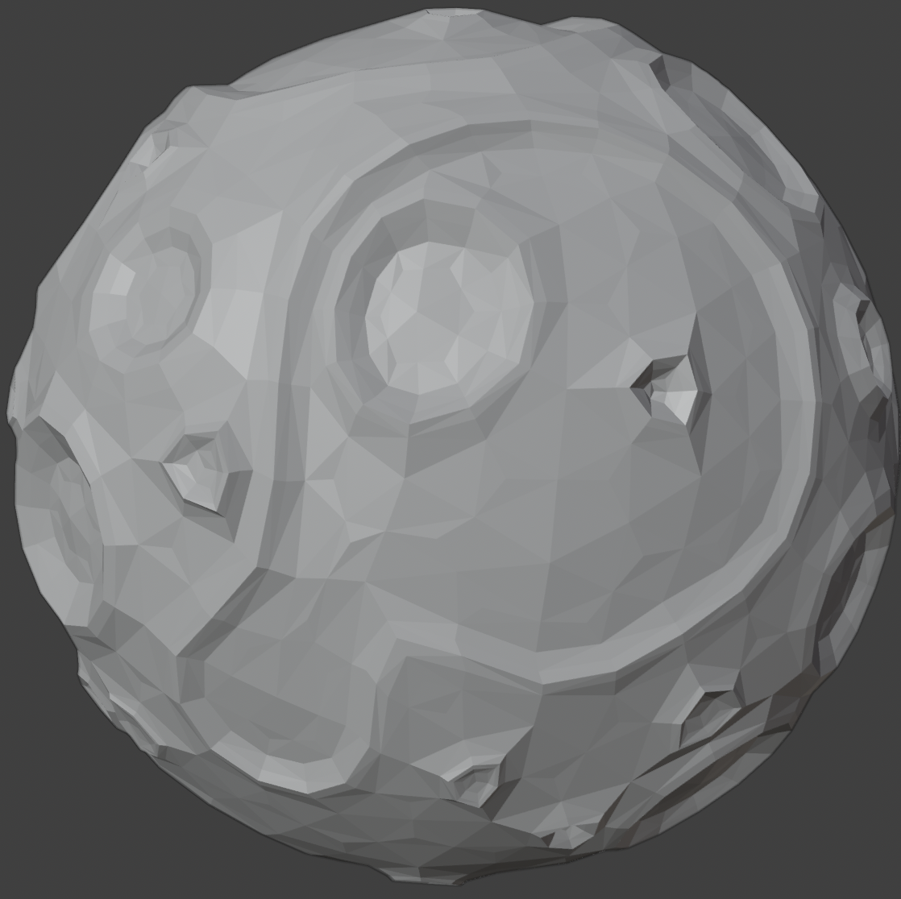

ACQUIRING SIGNAL…
Space has always been something I find genuinely fascinating, so when it came to choosing a theme for this project I didn't really need to think about it for long. Planets felt like the perfect subject for a 3D web app — each one looks completely different from the others. Earth has its continents and oceans, Saturn has the rings, Mars has that distinctive red surface, and the Moon has all its craters. That visual variety made the model selection experience feel interesting rather than just switching between similar objects. Solar Explorer lets you explore all four in real time — rotate and zoom around each one, toggle wireframe, adjust lighting, change surface colour variants, and trigger an orbital spin — all inside a mission control style interface with live telemetry data for each planet.
All four planet models are built in Blender and exported as GLB files, then loaded in the browser using Three.js GLTFLoader. One thing I had to sort out early on was that models exported from Blender come out at different scales and positions depending on how they were built, so I used Box3 bounding-box calculations to auto-centre and scale each one consistently when it loads. The surface variant system was something I wanted to get right — it records each mesh's original material colours into a UUID-keyed Map on load, then when you pick a variant it updates THREE.Color per mesh using luminance thresholding, which means very dark areas like craters stay untouched while the main surface colour changes. Wireframe mode traverses all mesh children and toggles material.wireframe. For lighting, I used RGBELoader with ACES Filmic tonemapping to get physically accurate image-based lighting rather than flat diffuse shading.




The whole visual direction came from NASA mission control and sci-fi HUD aesthetics. I didn't want it to look like a generic website — I wanted it to feel like you're actually operating something. The dark background was a deliberate choice to simulate deep space. Pure black felt too flat so I went with a very dark navy with subtle blue-purple gradient tones, which gives the background some depth while making the planets stand out. The electric blue accent colour ties into that sci-fi HUD feel throughout. Orbitron is used for all headings because it reads as futuristic and technical, while Space Mono keeps the body text feeling like a data readout. The three-column layout — selector panel, 3D viewport, telemetry readout — mirrors a real mission operations workstation. All colours are managed through CSS custom properties so the whole scheme stays consistent. The layout collapses to a single column at 920px for smaller screens.
Three.js loads via ES Module importmap which keeps the code clean and avoids bundling. The render loop runs inside a self-invoking IIFE using requestAnimationFrame, with OrbitControls damping giving the camera a smooth weighted feel when rotating — it felt much more like actually orbiting a planet than basic controls. The activateBody function handles the full model lifecycle: clearing the previous scene, loading the new GLB, running the Box3 auto-fit, recording colours, and generating the surface swatches. Because the Three.js module runs in its own scope, I exposed the control handlers on window so the HTML buttons can reach them. The UTC clock updates via setInterval every second.
The most obvious issue I ran into was wireframe mode — when I first toggled it, nothing visibly changed. The wireframe lines were rendering white against a near-black background so they were essentially invisible. Once I realised the background colour was the problem I changed the scene background to a dark navy which gave just enough contrast for the lines to show up clearly. Beyond that, I kept going back and refining things as I built. The lighting felt too harsh at first so I adjusted the tone mapping exposure until it looked right. The telemetry panel on the right felt quite empty early on so I added the progress bar fills to give it more of a live readout feel. I tested across Chrome, Firefox and Safari to make sure everything behaved consistently, and checked GLB load times in DevTools to keep them under a reasonable threshold.
Three.js r158 — threejs.org (MIT) · GLTFLoader — threejs.org/docs · RGBELoader — threejs.org/docs · OrbitControls — threejs.org/docs · Google Fonts — fonts.google.com (OFL) · Audio — Pixabay.com (Free)